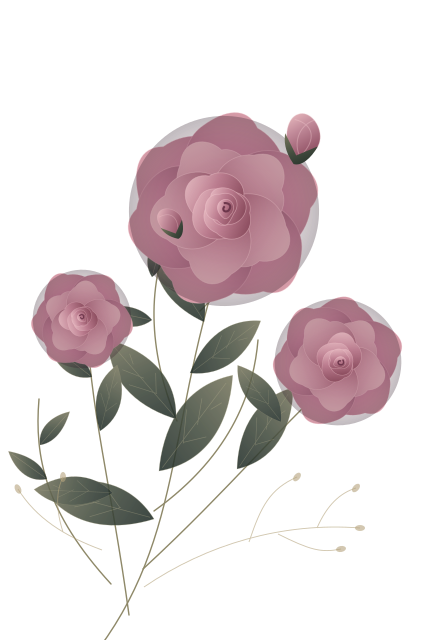

BU KICHIK OLAM FAQAT SIZ UCHUN
Ba’zi ismlar yurakka yoziladi.
Dilbarxon
Minglab so‘zlar orasidan eng chiroylisini izladim.
Keyin shunchaki sizning ismingni yozdim.
Bir oz mehr. Bir oz sehr. Hammasi siz uchun.
YURAKDAN CHIQQAN TILAKLAR
Dunyo sizga
mehribon bo‘lsin.
Katta va’dalar emas. Shunchaki, sizning
baxtli bo‘lishingni istagan kichik tilaklar.
SIZ UCHUN BIR TILAK
01 / 06
Tabassumingiz hech qachon
sababsiz qolmasin.
Har kuningizda ko‘nglingizni yorug‘ qiladigan
kichik
bir
quvonch topilsin.